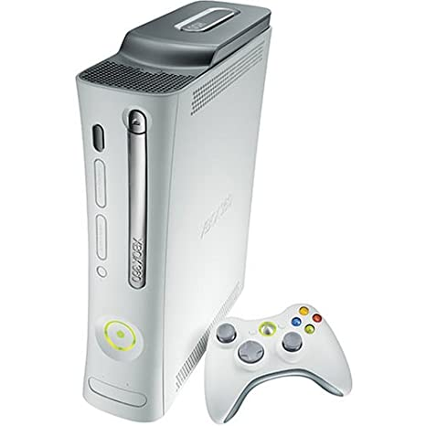

Release
The Xbox 360 was released as the successor of the original Xbox in November 2005, competing with Sony's PlayStation 3 and Nintendo's Wii as part of the seventh generation of video game consoles. As of June 30, 2013, 78.2 million Xbox 360 consoles have been sold worldwide. The Xbox 360 was officially unveiled on MTV on May 12, 2005, with detailed launch and game information divulged later that month at the Electronic Entertainment Expo (E3). The console sold out completely upon release in all regions except in Japan. Several retail configurations of the core Xbox 360 model were offered over its lifetime, varying the amount of RAM and internal storage offered.
Reception
In 2009, IGN named the Xbox 360 the sixth-greatest video game console of all time, out of a field of 25. Although not the best-selling console of the seventh-generation, the Xbox 360 was deemed by TechRadar to be the most influential, by emphasizing digital media distribution and online gaming through Xbox Live, and by popularizing game achievement awards. PC Magazine considered the Xbox 360 the prototype for online gaming as it "proved that online gaming communities could thrive in the console space". Five years after the Xbox 360's original debut, the well-received Kinect motion capture camera was released, which set the record of being the fastest selling consumer electronic device in history, and extended the life of the console. Edge ranked Xbox 360 the second-best console of the 1993–2013 period, stating "It had its own social network, cross-game chat, new indie games every week, and the best version of just about every multiformat game...Killzone is no Halo and nowadays Gran Turismo is no Forza, but it's not about the exclusives—there's nothing to trump Naughty Dog's PS3 output, after all. Rather, it's about the choices Microsoft made back in the original Xbox's lifetime. The PC-like architecture meant the early EA Sports games ran at 60fps compared to only 30 on PS3, Xbox Live meant every dedicated player had an existing friends list, and Halo meant Microsoft had the killer next-generation exclusive. And when developers demo games on PC now they do it with a 360 pad—another industry benchmark, and a critical one."... Find out more
